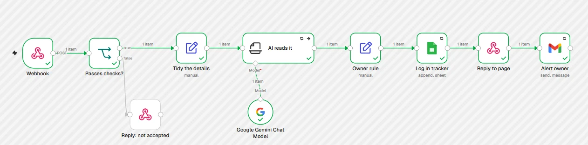

Sample workflow
From scattered enquiries to organised follow-ups.
How it’s built

Tools used: n8n · Google Gemini · Google Sheets · Gmail
If the AI isn’t sure, or can’t read it: it’s still logged and marked for a person to check.
The problem
Enquiries arrive through emails and website forms. Information needs to be copied into records, customers wait for replies, and follow-ups are easily forgotten.
The improvement
- Capture enquiries from agreed sources.
- Organise customer information in one central record.
- Send automatic acknowledgement emails.
- Assign or identify the next follow-up action.
- Track enquiry status and flag items requiring attention.
How it works
- Enquiry received
- Information captured
- Automatic acknowledgement
- Tracker updated
- Follow-up managed
Human oversight
Unusual, incomplete or specific enquiries are flagged for a person to review rather than automatically receiving an unsuitable response.
The result
Less copying between inboxes and spreadsheets, faster initial responses and clearer visibility over outstanding enquiries.
Illustrative workflow. The final design depends on the business process and tools used.